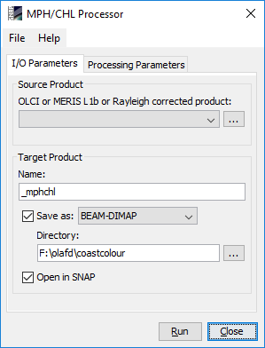
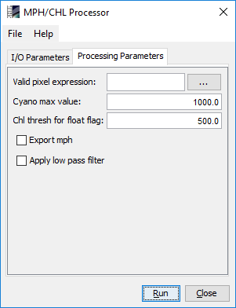

| MPH/CHL Processor - User Interface | |
The MPH/CHL processor is invoked from the 'Optical --> Thematic Water Processing' menu by selecting the 'MPH/CHL Processor' command. On the command line the MPH/CHL processor is available by means of the Graph Processing Tool gpt which is located in the SNAP bin directory. Typing gpt MphChl -h displays further information.
Selecting the 'MPH/CHL Processor' command from the SNAP 'Optical --> Thematic Water Processing' menu pops up the following dialog:

Source Product: Here the user specifies the source product, which can be either an OLCI or MERIS L1b product, or a product containing bottom-of-Rayleigh corrected reflectances, which was generated with the Rayleigh correction processor available in 'Optical --> Preprocessing --> Rayleigh correction'. The combo box presents a list of all products open in SNAP. The user may select one of these or, by clicking on the button next to the combo box, choose a product from the file system.
Name: Used to specify the name of the target product
Save as: Used to specify whether the target product should be saved to the file system. The combo box presents a list of available file formats. The text field or the button next to it allow to specify a target directory.
Open in SNAP: Used to specify whether the target product should be opened in SNAP. When the target product is not saved, it is opened in SNAP automatically.

Valid pixel expression: An expression which identifies valid input pixels according to flags that are available in the input image.
Cyano max value: Threshold to cap maximum chlorophyll concentration estimated for cyanobacteria-dominant waters.
Chl thresh for float flag: Value, above which cyanobacteria scum is expected, even if not indicated by a BRR maximum at 753 nm (see Algorithm specification, second figure).
Export mph: Write the internally calculated MPH value to a separate band for the evaluation of custom peak height to concentration conversions.
Apply low pass filter: If selected, a 3x3 low-pass filter is applied on the CHL result image.